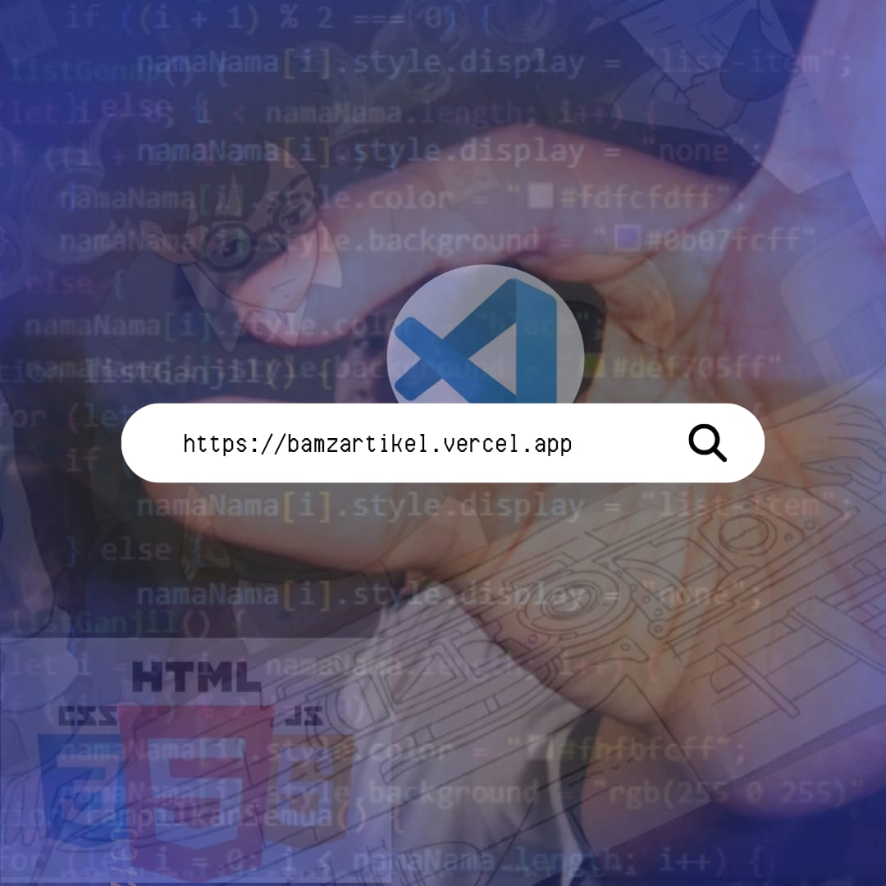
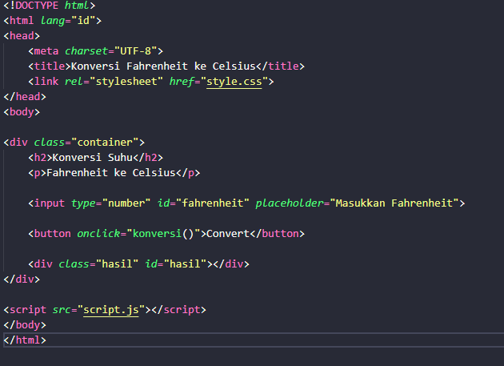
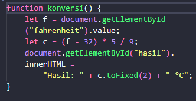
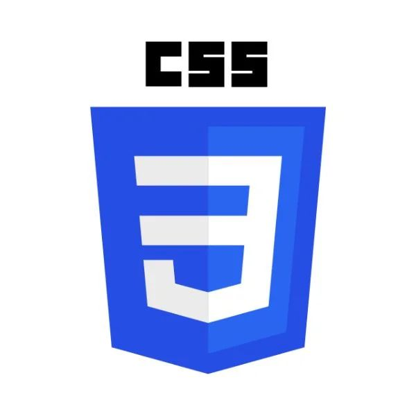

Jelajahi Wawasan di BamzArtikel
Tempat terbaik untuk menemukan artikel seputar teknologi, tutorial, dan cerita inspiratif harian.

Web ini saya buat sebagai wadah untuk menyimpan mini project kodingan saya dan berbagi informasi menarik seputar teknologi. Dan sebagai media untuk menunjukkan kemampuan saya dalam membuat project. Serta mengembangkan skil koding saya, meskipun ada campur tangan ai tapi saya cukup mampu memahami konsep dan algoritmanya.
Project 1: Konversi Suhu
Fahrenheit ke Celsius
Projek ini adalah aplikasi perhitungan sederhana... (f - 32) * 5 / 9
Source Code:
 Project 2: Manipulasi Daftar Nama
- 1. RIPAEL
- 2. FAUZAN
- 3. NAZMU
- 4. ADZAN
- 5. MARCEL
- 6. ARIF
- 7. NAUVAL
- 8. DEWA
- 9. SADAM
- 10. SATRIA
- 11. RAYAN
- 12. RAYHAN
- 13. DEDY
- 14. ADILAH
- 15. AJI
- 16. RAMBU
- 17. RAFA
Project 3: Jam Digital Dynamic Border
00:00:00
Skil yang sedang saya pelajari
HTML5
CSS3 / Bootstrap
JavaScript
